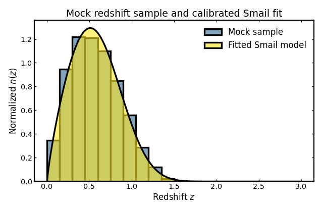
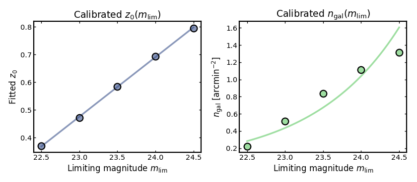

Parent n(z) from mocks#
Parent n(z) from mocks#
In realistic forecasting or survey-design workflows, the parameters of analytic redshift distributions are not chosen arbitrarily. Instead, they are usually inferred from simulations or mock catalogs that reflect the expected survey selection, depth, and galaxy population.
For example, parameters of the widely used Smail model are commonly calibrated using mock galaxy samples constructed to match survey characteristics such as limiting magnitude, redshift completeness, and selection effects. The resulting analytic distribution then serves as a convenient summary of the underlying mock population.
Binny provides binny.NZTomography.calibrate_smail_from_mock()
to perform this type of calibration directly from simulated galaxy
samples. Given true galaxy redshifts and apparent magnitudes from a mock
catalog, the calibration estimates:
the effective Smail shape parameters,
how the redshift scale parameter varies with limiting magnitude,
and how the galaxy number density changes with survey depth.
The example below generates a simple synthetic mock catalog, runs the calibration, and prints the fitted relations.
Synthetic mock catalog#
For demonstration purposes we construct a small synthetic galaxy catalog that mimics the basic ingredients of a survey sample. Each mock galaxy is assigned a true redshift and an apparent magnitude. The distribution is chosen to resemble a typical magnitude-limited galaxy survey: most galaxies lie at moderate redshift, while progressively fewer objects appear at higher redshift.
The apparent magnitudes are generated so that galaxies tend to appear fainter at larger distances, with additional scatter representing intrinsic galaxy diversity and observational noise. This produces a mock population whose properties roughly follow the trends expected in real survey data.
From this synthetic catalog we then define a set of limiting magnitudes that represent surveys of different depths. For each limiting magnitude we select the galaxies that would be observable and use them to calibrate the analytic Smail redshift distribution.
import numpy as np
from binny import NZTomography
rng = np.random.default_rng(42)
n_gal = 30000
z_true = rng.gamma(shape=2.4, scale=0.32, size=n_gal)
z_true = z_true[(z_true >= 0.0) & (z_true <= 3.0)]
# Make magnitudes loosely correlated with redshift, with scatter
mag = 22.0 + 2.2 * z_true + rng.normal(0.0, 0.45, size=z_true.size)
# Define magnitude limits for calibration
maglims = np.array([22.5, 23.0, 23.5, 24.0, 24.5])
result = NZTomography.calibrate_smail_from_mock(
z_true=z_true,
mag=mag,
maglims=maglims,
area_deg2=100.0,
infer_alpha_beta_from="deep_cut",
alpha_beta_maglim=24.5,
z_max=3.0,
)
print("Calibration succeeded:", result["ok"])
print()
print("Inferred Smail shape parameters:")
print(result["alpha_beta_fit"])
print()
print("Calibrated z0(maglim) relation:")
print(result["z0_of_maglim"])
print()
print("Calibrated ngal(maglim) relation:")
print(result["ngal_of_maglim"])
Conceptually, the calibration step measures how the redshift distribution of the galaxy sample changes as the survey becomes deeper. A deeper magnitude limit allows fainter galaxies to enter the sample, which typically increases both the total galaxy number density and the characteristic redshift scale of the population.
The calibration procedure therefore infers three quantities:
the overall shape of the redshift distribution,
how the characteristic redshift scale changes with survey depth,
and how the galaxy surface density increases as fainter galaxies are included.
These relations provide a compact analytic summary of the mock galaxy sample and can later be used to generate survey-motivated parent redshift distributions.
Visualizing the calibrated parent distribution#
After the calibration step, the fitted Smail model represents an analytic approximation to the redshift distribution implied by the mock catalog.
To illustrate this, we compare the analytic model with the empirical redshift distribution of the galaxies that satisfy a chosen magnitude limit. The histogram represents the normalized redshift distribution of the mock sample, while the smooth curve shows the calibrated analytic model.
If the calibration has captured the main statistical properties of the sample, the analytic curve should closely follow the overall shape of the mock distribution.
import numpy as np
import matplotlib.pyplot as plt
from matplotlib.colors import to_rgba
import cmasher as cmr
from binny import NZTomography
rng = np.random.default_rng(42)
n_gal = 30000
z_true = rng.gamma(shape=2.4, scale=0.32, size=n_gal)
z_true = z_true[(z_true >= 0.0) & (z_true <= 3.0)]
mag = 22.0 + 2.2 * z_true + rng.normal(0.0, 0.45, size=z_true.size)
maglim = 24.5
sel = mag <= maglim
result = NZTomography.calibrate_smail_from_mock(
z_true=z_true,
mag=mag,
maglims=np.array([22.5, 23.0, 23.5, 24.0, 24.5]),
area_deg2=5.0,
infer_alpha_beta_from="deep_cut",
alpha_beta_maglim=24.5,
z_max=3.0,
)
alpha = result["alpha_beta_fit"]["params"]["alpha"]
beta = result["alpha_beta_fit"]["params"]["beta"]
z0_fit = result["z0_of_maglim"]["fit"]
if z0_fit["law"] == "linear":
z0 = z0_fit["a"] * maglim + z0_fit["b"]
elif z0_fit["law"] == "poly2":
z0 = z0_fit["c2"] * maglim**2 + z0_fit["c1"] * maglim + z0_fit["c0"]
else:
raise ValueError(f"Unknown z0 law: {z0_fit['law']}")
z = np.linspace(0.0, 3.0, 600)
nz_fit = NZTomography.nz_model(
"smail",
z,
z0=z0,
alpha=alpha,
beta=beta,
normalize=True,
)
colors = cmr.take_cmap_colors(
"viridis",
4,
cmap_range=(0, 1),
return_fmt="hex"
)
_, c_hist, _, c_fit = colors
hist_fill = to_rgba(c_hist, 0.6) # alpha applied only to fill
fit_fill = to_rgba(c_fit, 0.6) # alpha only on fill
plt.figure(figsize=(8.0, 5.2))
plt.hist(
z_true[sel],
bins=20,
range=(0.0, 3.0),
density=True,
edgecolor="k",
linewidth=3,
color=hist_fill,
label="Mock sample",
)
# filled analytic model
plt.fill_between(
z,
0.0,
nz_fit,
color=fit_fill,
edgecolor="k",
linewidth=3.0,
zorder=20,
label="Fitted Smail model",
)
plt.xlabel("Redshift $z$")
plt.ylabel(r"Normalized $n(z)$")
plt.title("Mock redshift sample and calibrated Smail fit")
plt.legend(frameon=False)
plt.tight_layout()
(Source code, png, hires.png, pdf)
{kind=link}
{kind=link}
{kind=link}

Inspecting the calibrated depth relations#
The calibration also returns relations that describe how key survey properties evolve with limiting magnitude.
In practice, deeper surveys detect more galaxies and probe higher redshifts. This behavior appears in two fitted trends:
the characteristic redshift scale \(z_0\), which increases with depth,
and the galaxy surface density \(n_{\rm gal}\), which grows as fainter galaxies are included.
Plotting these relations provides a simple way to verify that the fitted models reproduce the behavior measured directly from the mock catalog.
import numpy as np
import matplotlib.pyplot as plt
from matplotlib.colors import to_rgba
import cmasher as cmr
from binny import NZTomography
rng = np.random.default_rng(42)
n_gal = 30000
z_true = rng.gamma(shape=2.4, scale=0.32, size=n_gal)
z_true = z_true[(z_true >= 0.0) & (z_true <= 3.0)]
mag = 22.0 + 2.2 * z_true + rng.normal(0.0, 0.45, size=z_true.size)
maglims = np.array([22.5, 23.0, 23.5, 24.0, 24.5])
result = NZTomography.calibrate_smail_from_mock(
z_true=z_true,
mag=mag,
maglims=maglims,
area_deg2=5.0,
infer_alpha_beta_from="deep_cut",
alpha_beta_maglim=24.5,
z_max=3.0,
)
z0_points = result["z0_of_maglim"]["points"]
z0_fit = result["z0_of_maglim"]["fit"]
ngal_points = result["ngal_of_maglim"]["points"]
ngal_fit = result["ngal_of_maglim"]["fit"]
mfit = np.linspace(maglims.min(), maglims.max(), 200)
if z0_fit["law"] == "linear":
z0_curve = z0_fit["a"] * mfit + z0_fit["b"]
elif z0_fit["law"] == "poly2":
z0_curve = z0_fit["c2"] * mfit**2 + z0_fit["c1"] * mfit + z0_fit["c0"]
else:
raise ValueError(f"Unknown z0 law: {z0_fit['law']}")
if ngal_fit["law"] == "linear":
ngal_curve = ngal_fit["p"] * mfit + ngal_fit["q"]
elif ngal_fit["law"] == "loglinear":
ngal_curve = 10.0 ** (ngal_fit["s"] * mfit + ngal_fit["t"])
else:
raise ValueError(f"Unknown ngal law: {ngal_fit['law']}")
cmap = "viridis"
c1 = cmr.take_cmap_colors(cmap, 3, cmap_range=(0.15, 0.35))[1]
c2 = cmr.take_cmap_colors(cmap, 3, cmap_range=(0.65, 0.85))[1]
fill1 = to_rgba(c1, 0.6)
fill2 = to_rgba(c2, 0.6)
fig, axes = plt.subplots(1, 2, figsize=(10.5, 4.6))
axes[0].plot(mfit, z0_curve, lw=3, color=c1, alpha=0.6)
axes[0].scatter(
z0_points["maglim"],
z0_points["z0"],
s=150,
facecolor=fill1,
edgecolors="k",
linewidth=2.0,
zorder=20,
)
axes[0].set_xlabel(r"Limiting magnitude $m_{\rm lim}$")
axes[0].set_ylabel(r"Fitted $z_0$")
axes[0].set_title(r"Calibrated $z_0(m_{\rm lim})$")
axes[1].plot(mfit, ngal_curve, lw=3, color=c2, alpha=0.6)
axes[1].scatter(
ngal_points["maglim"],
ngal_points["ngal_arcmin2"],
s=150,
facecolor=fill2,
edgecolors="k",
linewidth=2.0,
zorder=20,
)
axes[1].set_xlabel(r"Limiting magnitude $m_{\rm lim}$")
axes[1].set_ylabel(r"$n_{\rm gal}$ [arcmin$^{-2}$]")
axes[1].set_title(r"Calibrated $n_{\rm gal}(m_{\rm lim})$")
plt.tight_layout()
(Source code, png, hires.png, pdf)
{kind=link}
{kind=link}
{kind=link}

When to use calibration#
Calibration is useful when you have access to a mock catalog or simulation and want to construct an analytic parent redshift distribution that reflects the statistical properties of that galaxy sample.
In this approach, the parameters of the analytic model are inferred from the mock population rather than being specified directly. This makes the resulting distribution more representative of a survey-like galaxy sample.
Both approaches are useful in practice:
direct specification of model parameters is convenient for quick tests and controlled demonstrations,
calibration is more appropriate when constructing survey-motivated parent redshift distributions from realistic mock catalogs.
Notes#
The synthetic catalog used in this example is intended only for demonstration purposes. Real survey forecasts typically rely on more detailed mock catalogs that incorporate selection effects, survey geometry, and realistic galaxy population models.
The fitted analytic model is not expected to reproduce every feature of the mock redshift histogram. Instead, it provides a smooth approximation that captures the main statistical properties of the galaxy sample.
As the limiting magnitude becomes deeper, the observed galaxy population generally extends to higher redshift while the total galaxy number density increases. The calibrated relations returned by the procedure describe this behavior.
In practice, such calibrated relations are often used in survey forecasting pipelines to generate parent redshift distributions that are consistent with the depth and selection of a given survey.